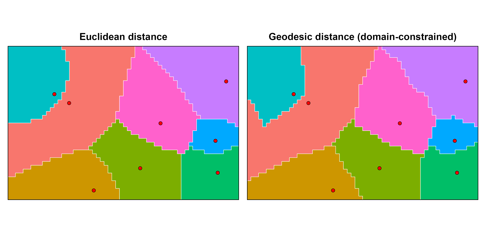
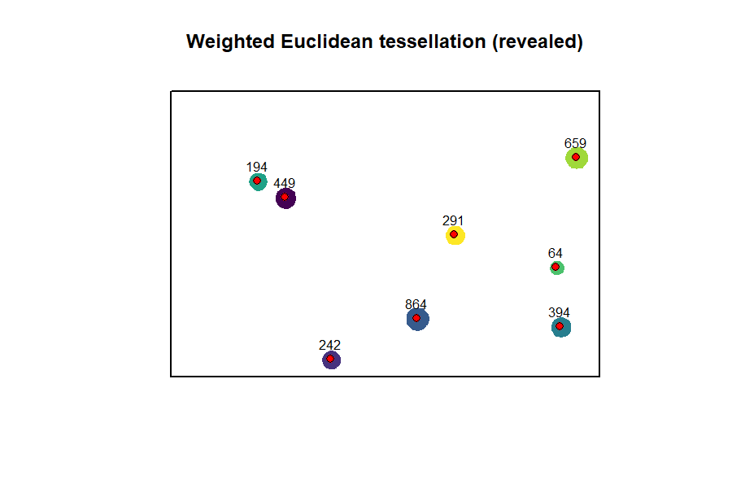

weightedVoronoi generates weighted spatial partitions that respect boundaries, landscape structure, and heterogeneous point influence using Euclidean or geodesic distance.
🌐 Website: https://HarriRaven.github.io/weightedVoronoi/

Key Features
Weighted Euclidean and geodesic tessellations inside arbitrary polygon domains
Flexible weight semantics via weight_model and weight_power
Custom resistance surfaces and barriers via
compose_resistance()andadd_barriers()Terrain-informed geodesic allocation via DEM/Tobler resistance
Terrain-anisotropic geodesic tessellations
Scalable multisource geodesic allocation for additive isotropic geodesics
Uncertainty-aware tessellations with probability and entropy outputs
Temporal tessellation stacks with change and persistence maps
Interactive demo
Explore weighted Voronoi tessellations interactively:
👉 https://harriraven.shinyapps.io/weightedVoronoi-demo/
- Compare Euclidean vs geodesic allocation
- Add resistance surfaces and terrain effects
- Visualise how domain geometry constrains influence
Choosing a workflow
weightedVoronoi supports several spatial tessellation approaches depending on your assumptions about distance, landscape structure, and analysis goals.
Quick guide:
Straight-line influence (fastest) → distance = "euclidean"
Constrained by domain geometry (no crossing gaps/barriers) → distance = "geodesic"
Landscape affects movement (e.g. terrain, land cover) → provide resistance_rast or dem_rast
Uphill vs downhill matters (directional movement) → anisotropy = "terrain"
Repeated runs (uncertainty or time series) → use prepare_geodesic_context() + geodesic_engine = "multisource"
Uncertain weights → weighted_voronoi_uncertainty()
Time series of tessellations → weighted_voronoi_time()
For a more detailed guide, see the vignette.
Installation
install.packages("remotes")
remotes::install_github("HarriRaven/weightedVoronoi")
library(sf)
library(terra)
library(weightedVoronoi)Generator points with weights
points_sf <- st_sf(
village = paste0("V", 1:5),
population = c(50, 200, 1000, 150, 400),
geometry = st_sfc(
st_point(c(200, 200)),
st_point(c(800, 250)),
st_point(c(500, 500)),
st_point(c(250, 800)),
st_point(c(750, 750))
),
crs = crs_use
)Weighted Euclidean tessellation
out_euc <- weighted_voronoi_domain(
points_sf = points_sf,
weight_col = "population",
boundary_sf = boundary_sf,
res = 20,
weight_transform = log10,
distance = "euclidean",
# optional: alternative weight behaviour
weight_model = "multiplicative",
verbose = FALSE
)Weighted geodesic tessellation (domain-constrained shortest path distance)
out_geo <- weighted_voronoi_domain(
points_sf = points_sf,
weight_col = "population",
boundary_sf = boundary_sf,
res = 20,
weight_transform = log10,
distance = "geodesic",
close_mask = TRUE,
close_iters = 1,
verbose = FALSE
)The package also supports uncertainty-aware and temporal workflows; see the vignette for worked examples.
Fast workflows with prepared context
ctx <- prepare_geodesic_context(...)
weighted_voronoi_domain(..., prepared = ctx)Fast reuse currently supported in:
weighted_voronoi_domain(..., prepared = ctx)Temporal and uncertainty workflows automatically reuse internal preparation and do not currently accept external prepared contexts
Reusing Geodetic Contexts
ctx <- prepare_geodesic_context(
boundary_sf = boundary_sf,
res = 20,
geodesic_engine = "multisource"
)
# Now reuse for many runs (fast)
out1 <- weighted_voronoi_geodesic(
points_sf = points_t1,
weight_col = "population",
prepared = ctx
)
out2 <- weighted_voronoi_geodesic(
points_sf = points_t2,
weight_col = "population",
prepared = ctx
)This avoids rebuilding the geodesic graph and can substantially speed up repeated runs (e.g. temporal or uncertainty workflows).
Custom Resistance and Barriers
Build a resistance surface on the same grid, optionally combine layers, then apply barriers before running a geodesic tessellation.
# Use the Euclidean allocation grid as a convenient template
template <- out_euc$allocation
# Base resistance (all 1)
R <- template
terra::values(R) <- 1
# Add a high-friction vertical band (e.g., dense vegetation)
xy <- terra::xyFromCell(R, 1:terra::ncell(R))
band <- xy[,1] > 450 & xy[,1] < 550
vals <- terra::values(R)
vals[band] <- 25
terra::values(R) <- vals
# Add a semi-permeable river barrier (vector line)
river <- st_sf(
geometry = st_sfc(st_linestring(rbind(c(500, 0), c(500, 1000)))),
crs = st_crs(boundary_sf)
)
# Tip: for coarse rasters, use width ~ res/2 or res
R2 <- add_barriers(R, river, permeability = "semi", cost_multiplier = 20, width = 20)
out_geo_res <- weighted_voronoi_domain(
points_sf = points_sf,
weight_col = "population",
boundary_sf = boundary_sf,
res = 20,
weight_transform = log10,
distance = "geodesic",
resistance_rast = R2,
verbose = FALSE
)Terrain-aware tessellations
Environmental resistance and terrain can strongly influence spatial allocation.
The example below shows how terrain anisotropy (direction-dependent movement cost) can substantially alter geodesic tessellations compared to isotropic resistance.
Unlike isotropic resistance, terrain-anisotropic geodesic tessellations allow uphill and downhill movement to differ, producing direction-dependent allocation patterns.

Outputs
weighted_voronoi_domain() returns:
polygons: sf object with one polygon per generator (and attributes)
allocation: terra::SpatRaster assigning each raster cell to a generator
summary: generator-level summary table (area, share, weights, etc.)
diagnostics: diagnostics and settings (coverage, unreachable fraction for geodesic, etc.)
Notes
Inputs must be in a projected CRS with metric units (e.g. metres).
res controls the raster resolution and therefore the trade-off between speed and boundary fidelity.
Geodesic tessellations are typically slower than Euclidean tessellations because shortest-path distances are computed within the domain.